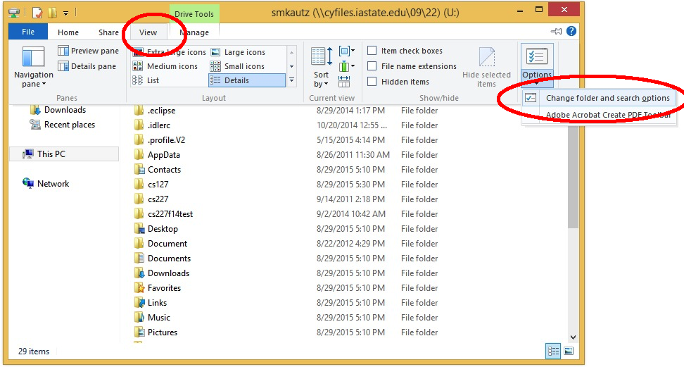
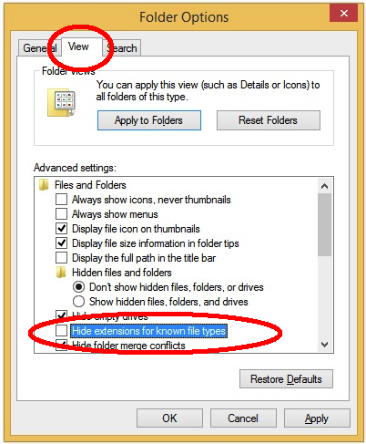

Finding Your Project Files
The Java code that you typed to make theGreeter class is called source code. It is human-readable and is stored as a text file with the extension ".java". In order for your code to be run, it is translated into executable instructions by a tool called a compiler. Eclipse normally runs the compiler automatically each time you save a file. For Java code, the executable files are called class files and have the extension ".class".
In Java, the name of the file always matches the name of the public class it contains, so our source file is called "Greeter.java". In addition, if the class is within a package, the file has to be located in a directory matching the package name. (Packages can also be nested, corresponding to a nested sequence of directories.)
By default, Eclipse puts our source files in a directory called src and puts the corresponding class files in a directory called bin. Both of these are located within the project directory in the workspace. The name of the project directory matches the name of the project you created in Eclipse. Putting this all together, we should be able to find two files:
U:\cs227\workspace\project1\src\lab1\Greeter.java
U:\cs227\workspace\project1\bin\lab1\Greeter.class
Using File Explorer (or the OS X Finder), find these two files.
Making file extensions visible
Most filenames actually have an extension consisting of a period followed by several letters, such as.class or .java. For some bizarre reason, the default for File Explorer is to hide that part of the file name.
In programming we frequently are in a situation where there are two or more files whose names only differ in the extension.
In this course it will be crucial for you to be able to distinguish between them, e.g., to distinguish .java files and .class files.
Windows
- In File Explorer, click on the "View" tab.
- In the "Options" drop-down menu, select "Change folder and search options".
 - In the Folder Options dialog that comes up, click on the "View" tab.
- UN-check the option "Hide extensions for known file types".
 - Click "Apply to Folders" and then "OK". (If "Apply to Folders" button is disabled, just click OK. )
OS X
Go to Finder -> Preferences -> Advanced and check the box "Show all filename extensions".Checkpoint 2
- Run your Greeter program for the TA.
- Show the TA the two files
Greeter.javaandGreeter.classin File Explorer. The workspace should be on a network server and you should have the file extensions visible in File Explorer.